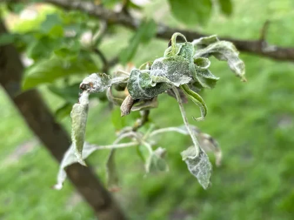
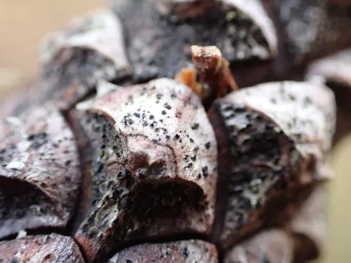
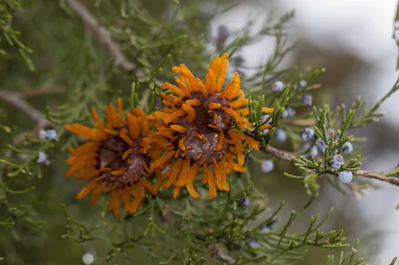
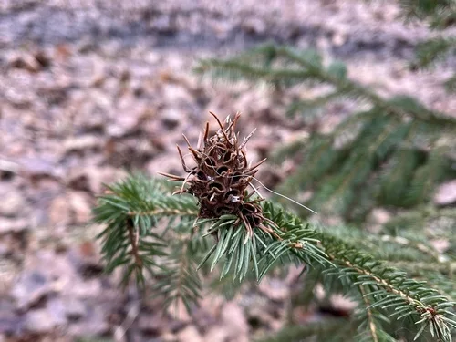
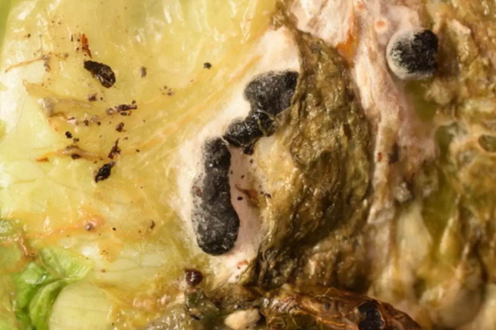

Stem problems

Drooping flower stalks or wilting stems?Compare the support of flower and leaf stalks, then check stem-base firmness and moisture throughout the root ball.

Individual branches dying backFollow the dead branch back toward live growth and inspect the boundary for breaks, sunken bark or a tight tie.

Dieback from shoot tipsCompare exposed and sheltered shoots. Check whether terminal buds are brown while lower buds remain alive.

Soft, rotting stemsCheck whether softening starts at the soil line, and look for discoloration, sunken tissue or injury.

Brown spots on stemsPhotograph the edge of a spot. Check whether the surface is flat, corky, sunken or cracked.

Pale marks that stay the same sizePhotograph the mark next to a ruler. Check whether the bark has closed around it and whether its edges change over time.

White wax and mealybugs at stem jointsLook beneath the white wax in leaf axils or old sheaths for oval insects. Recheck a growing tip that was previously clean.

White powder on plant surfacesLook for irregular powdery patches and check leaves, young stems and fruit.

Gray-brown fuzzy growth on stemsGray-brown mold covers an upright stem, and the leaf above it is already dry.

Pale, stretched shootsCheck the seed leaves and then assess the separate true leaves and new stem growth.

Are the small covers on the stem scale insects?Use a lens on twig bumps. Armored scale shields may lift separately; soft scales stay attached.

Clusters of weak shoots at one budCompare the cluster with normal branching and note nearby pruning cuts or wounds.

Dark swellings on stemsRecord whether swellings develop at the crown, on shoots or at old wounds, and inspect the surface texture.

Longhorn beetles and holes in woody stemsPhotograph suspected beetles or tree damage and record the location. Leave nearby wood in place.

Hard black knots on plum and cherry twigsThe black lump is easiest to recognize after leaves fall. Its position matters: a knot near the end of a cherry twig allows a different pruning decision from one enveloping a plum's main trunk.

Sunken bark with concentric ridgesEach ridge marks an attempt by the tree to grow around damaged bark. The number, arrangement and condition of those ridges are more informative than bark color viewed from a distance.

Coral-colored cushions on dead twigsSmall pinkish cushions on a pruning stub tell you exactly where to start investigating. The important question is whether the wood carrying them was already dead or whether living spurs nearby are failing too.

Orange-edged, peeling cankers on aspenA patch of bark on an aspen can look relatively intact while a branch above it retains dead leaves. The combination of bark stages and the location of the declining branch helps guide inspection.

Sheets of fungal tissue under shed oak barkBroad plaques revealed beneath oak bark deserve a closer look when they follow prolonged drought. Establish whether the plaque is on a dead limb, a still-living limb or the main trunk.

Orange pustules on chestnut barkA single chestnut branch dying above a patch of rough bark is worth tracing to its base. Orange structures at that exact point are more informative than scattered brown leaves elsewhere.

Round woody swellings on pine branchesA permanent wooden ball on a pine shoot can become much more conspicuous when spring spores appear. Its location on a fine lateral or on the central leader determines how much of the tree is at stake.

Stunted pine candles beside cones with black specksWhen several pine shoots turn brown, the length of their needles helps establish when growth stopped. An affected candle, a healthy candle and an older cone together make a more informative sample than loose brown needles.

Hard shelf with a white underside on a trunkA woody shelf can remain on a tree after the season in which it first appeared. Inspect its connection to the tree before using its appearance to decide whether the standing trunk needs evaluation.

Orange jelly horns on juniperAn orange, jelly-like star appears on a woody swelling after rain.

One branch on a five-needle pine turns rusty redA red branch stands out against a green crown. Follow it inward and inspect the bark as well as the needles.

A mossy ball grows from a rose shootLook at where the tuft joins the shoot. A single firm, moss-covered swelling on a wild rose is characteristic of a bedeguar gall.

A miniature pineapple at the base of a spruce shootFollow the shoot past the swelling. The position of a spruce gall helps distinguish two common adelgid injuries.

Large black lumps sit in rotting lettuce tissueThe black lumps are embedded in soft tissue and are larger than soil specks. The tiny grains at an onion base are a different host and a different guide page.